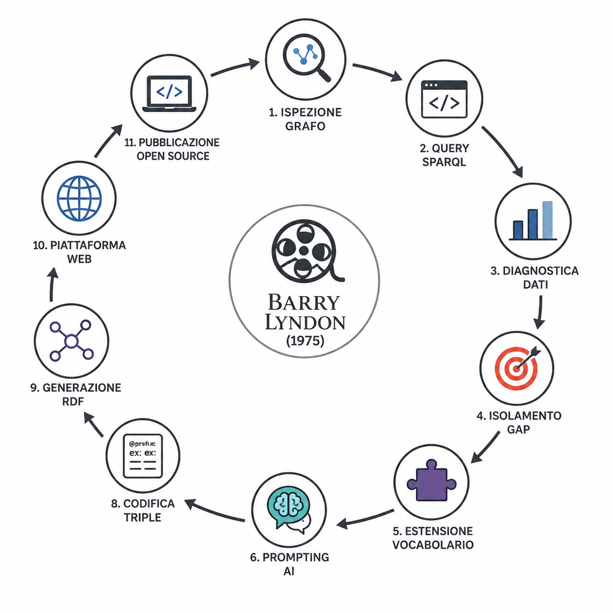

Per condurre questa ricerca semantica e strutturare l'arricchimento dei dati, abbiamo progettato una pipeline operativa suddivisa in fasi sequenziali. Il protocollo è stato concepito per far dialogare in modo organico il rigore dell'ispezione formale dei grafi RDF con l'euristica e la flessibilità dell'intelligenza artificiale generativa.

Rappresentazione concettuale della pipeline di ricercaLa Pipeline Operativa Passo Dopo Passo
Focus di Studio & Motivazioni
Abbiamo selezionato la pietra miliare del cinema Barry Lyndon (1975) per la sua straordinaria natura di "quadro in movimento", un'opera che intreccia indissolubilmente storia dell'arte e pionierismo tecnologico, offrendo il terreno ideale per una sperimentazione semantica complessa.
Ispezione del Grafo di Partenza (Wikidata)
Ci siamo interfacciati con l'endpoint SPARQL di Wikidata per studiare l'infrastruttura ontologica della nostra entità di riferimento. Abbiamo analizzato la gerarchia delle classi associate all'ecosistema cinematografico per comprendere come il database globale descrivesse originariamente la pellicola.
Sondaggio Strutturale
Abbiamo ingegnerizzato ed eseguito una serie di interrogazioni SPARQL di controllo (sia SELECT che ASK), implementando combinazioni mirate di operatori complessi. L'uso di REGEX per le stringhe di testo, di UNION per aggregare percorsi informativi alternativi e di logiche condizionali esterne tramite IF e BOUND ci ha permesso di interrogare in sicurezza il server senza causare blocchi o timeout.
Diagnostica e Mappatura dei Dati
Abbiamo decodificato i risultati restituiti dalle nostre interrogazioni, valutando criticamente la densità informativa del dataset. Questa fase ha permesso di catalogare i fatti già strutturati, rilevando una netta predominanza di attributi commerciali, distributivi, anagrafici e di cast.
Isolamento Scientifico dei Gap
Incrociando l'analisi critica della pellicola e lo studio delle fonti storiografiche con l'esito nullo di specifiche interrogazioni mirate, abbiamo dimostrato logicamente l'esistenza di tre macro-silenzi informativi nel grafo: la frammentazione della colonna sonora, l'assenza di collegamenti ai dipinti ispiratori del Settecento e il vuoto totale di dettagli sul comparto ottico.
Estensione Concettuale del Vocabolario
Per risolvere l'assenza di una proprietà specifica per la strumentazione fotografica, abbiamo progettato un'estensione concettuale definendo formalmente la proprietà inedita ex:cinematographicLensUsed, associandovi rigorosi vincoli di appartenenza sintattica (Domain impostato sulla classe Film e Range sulla classe Lente).
Interrogazione Strategica dei Modelli (Prompting)
Abbiamo formulato istruzioni strutturate per i modelli linguistici applicando tre distinte metodologie di Prompt Engineering: Zero-shot per l'estrazione fattuale diretta, Few-shot per guidare il formato di output tramite pattern di esempio, e Chain of Thought (CoT) per forzare il modello a scomporre razionalmente i passaggi logici del suo ragionamento.
Verifica Incrociata e Filtro delle Risposte
Abbiamo sottoposto a severa valutazione comparativa i testi generati da ChatGPT e Gemini, attuando un processo di validazione incrociata basato sui nostri archivi documentali primari (IMDb, cataloghi museali) al fine di eliminare alla radice eventuali imprecisioni o allucinazioni algoritmiche.
Codifica e Modellazione delle Triple
Abbiamo tradotto le informazioni verificate in sintassi Turtle (.ttl). Per i concetti esistenti, abbiamo riutilizzato i predicati standard del web semantico; per i brani musicali e i quadri assenti sul grafo, abbiamo praticato l'URI-Minting locale (ex:), ancorando i nuovi nodi a database globali esterni come Wikipedia o MusicBrainz.
Sintesi del Sotto-Grafo (RDF Generation)
Abbiamo implementato query SPARQL di tipo CONSTRUCT per forzare l'endpoint a generare attivamente i nuovi blocchi di codice Turtle del nostro progetto, combinando in un unico flusso stabile la definizione dello schema logico della nuova proprietà (TBox) e le relazioni reali storiche del film (ABox).
Sviluppo della Piattaforma Web
Abbiamo ingegnerizzato e strutturato il presente portale web, ospitandolo pubblicamente sull'infrastruttura di GitHub Pages, per esporre in modo chiaro, interattivo e open-source l'intero processo di ricerca, l'audit dei codici SPARQL sviluppati e le triple generate.